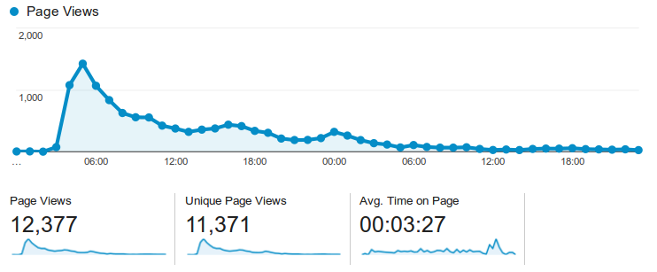
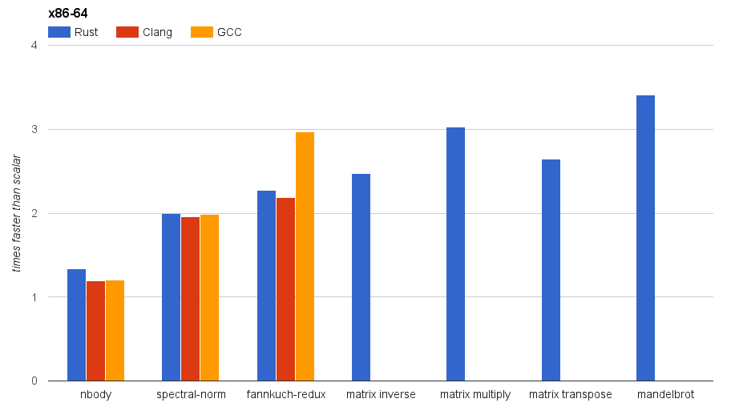

Huon Wilson
Mozilla Research & University of Sydney
Single Instruction Multiple Data: Do many number things at once.
Non-embedded devices have SIMD:
github.com/huonw/simd


fn mandelbrot(c_x: f32, c_y: f32, max_iter: u32) -> u32 { let mut x = c_x; let mut y = c_y; let mut count = 0; while count < max_iter { let xy = x * y; let xx = x * x; let yy = y * y; let sum = xx + yy; if sum > 4.0 { break } count += 1; x = xx - yy + c_x; y = xy + xy + c_y; } count }
 ×4
×4fn mandelbrot(c_x: f32x4, c_y: f32x4, max_iter: u32) -> u32x4 { let mut x = c_x; let mut y = c_y; let mut count = u32x4::splat(0); for _ in 0..max_iter as usize { let xy = x * y; let xx = x * x; let yy = y * y; let sum = xx + yy; let mask = sum.lt(f32x4::splat(4.0)); if !mask.any() { break } count = count + mask.to_i().select(u32x4::splat(1), u32x4::splat(0)); x = xx - yy + c_x; y = xy + xy + c_y; } count }
2.4× faster, on average.

2.1× faster, on average.

2.4× faster, on average.

 ×4: zero overhead
×4: zero overhead
|
|
simdfoo_avx,
foo_sse41, foo_sse2, etc.)